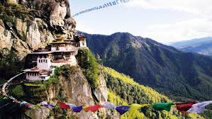

Nestled in the northeastern part of India, Sikkim is a state renowned for its breathtaking landscapes, rich cultural heritage, and serene atmosphere. Here's a glimpse into what makes Sikkim a captivating destination:
Sikkim is blessed with diverse ecosystems, including lush valleys, snow-capped mountains, and cascading waterfalls. Explore the pristine beauty of the state's national parks and wildlife sanctuaries, such as Khangchendzonga National Park and Fambong Lho Wildlife Sanctuary, home to a variety of flora and fauna.
Marvel at the majestic peaks of the Himalayas, including the iconic Khangchendzonga, the third-highest mountain in the world, and witness the serene beauty of Tsomgo Lake and Gurudongmar Lake, surrounded by snow-clad mountains.
Immerse yourself in the vibrant cultural heritage of Sikkim, characterized by its indigenous tribes and colorful festivals. Experience the joyous celebrations of festivals like Losar, Saga Dawa, and Pang Lhabsol, where traditional music, dance, and rituals are showcased.
Witness traditional art forms such as Thangka painting, Lepcha weaving, and mask dances, which reflect the unique cultural identity of Sikkim's diverse communities.
Sikkim is home to numerous monasteries and spiritual retreats, offering visitors a tranquil escape from the hustle and bustle of city life. Visit iconic monasteries such as Rumtek Monastery, Enchey Monastery, and Pemayangtse Monastery, where you can immerse yourself in meditation and spiritual teachings.
Explore the sacred sites of Sikkim, including the revered Tashiding Monastery and the peaceful Rabdentse Ruins, which offer panoramic views of the surrounding mountains and valleys.
Embark on thrilling adventures amidst Sikkim's natural wonders. Trek through pristine forests, explore high-altitude lakes, or indulge in adrenaline-pumping activities like river rafting and paragliding.
Experience eco-tourism initiatives such as the Khangchendzonga Biosphere Reserve and the Dzongu Ecotourism Circuit, where sustainable tourism practices promote conservation efforts while offering unique experiences to visitors.
Whether you seek serene natural landscapes, immersive cultural experiences, or thrilling adventures, Sikkim offers a diverse range of experiences for every traveler. Plan your journey to this enchanting state and immerse yourself in the serenity and majesty of Sikkim.
